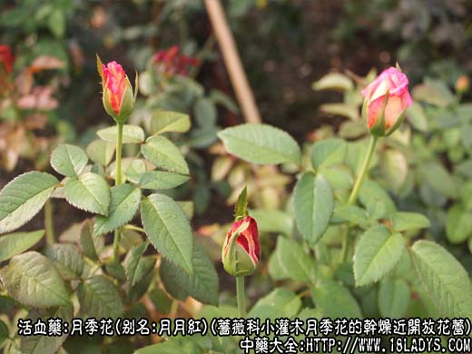
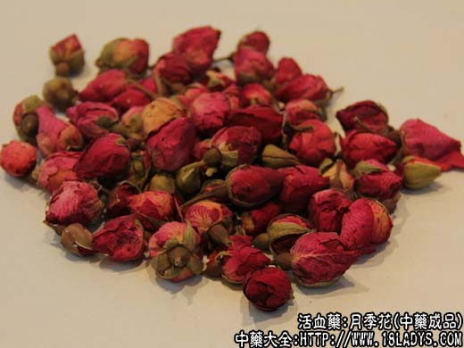
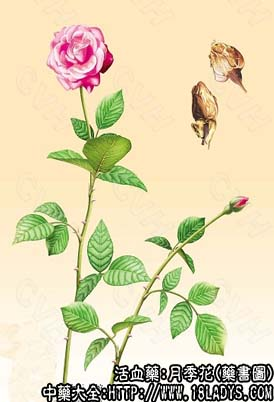

月季花为少常用中药。始载《本草纲目》。
别名：月月红。
来源：为蔷薇科植物小灌木月季花的干燥近开放花蕾和半开放的花朵。多为栽培。
产地：主产于江苏、浙江、广东、安徽、山东等省，其他各地亦有栽培。
性状鉴别：完整的花蕾或花朵多皱缩成团球形，径长1～2厘米。花冠重叠，花瓣倒卵形，上端紫红色或粉红色，中下端渐呈淡黄棕色，中央有雄蕊多数，暗黄色，花萼灰绿色或淡棕褐色，先端裂为五片，基部花托呈钟状并带有残存短柄。质轻脆，花冠易脱落。气香，味微苦涩。
以朵大，色紫红，不散瓣，香气浓郁者为佳。
主要成分：含芳香性挥发油，主要为萜醇类化合物。
功效与作用：理气、活血、调经、消肿。
炮制：生用。
性味：甘、温。
归经：入肝经。
功能：活血调经。
主治：月经不调，小腹胀痛等症。
临床应用：主要用于妇科经闭或月经稀发，色淡而量少，小腹痛，兼有精神不振，大便燥结者（即气滞血瘀型），月季花有理气、通经、通便的作用，可用单味3g，加红糖适量，水煎服，或配丹参、当归、香附等水煎或浸酒服，方如月季酒。外用以花或嫩叶捣烂外敷跌打瘀肿，能活血消瘀。
用量：干品用1.5～4.5g，不宜多用，否则易致腹痛、便溏。
处方举例：月季酒：月季花3g、当归9g、丹参9g，黄酒适量浸服。